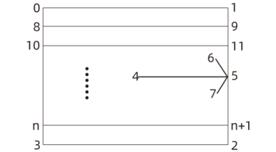

|
类型 |
HMI |
|
描述 |
将旋转矩形roi分解为HMI支持的绘图图元并添加控制参数，便于HMI绘图显示 |
|
语法 |
ZV_HmiRect2(tabIdRect,tabIdOut[,maxElems=0])
参数： tabIdRect：保存旋转矩形参数的TABLE索引，依次为cx、cy、width、height、angle、subNum、subWidth，即旋转矩形的中心坐标cx、cy、宽、高、角度、子区域数量、子区域宽度。这些值均为hmi控件坐标系下的值；子区域数量可以为0，maxElems缺省下，超过80个则超出部分不再绘制。 通常绘制一般的旋转矩形时如创建模板的ROI矩形 、Blob分析所用的生成Region的roi矩形，subNum=0和subWidth=0则可；而绘制测量直线的roi矩形时，sub_num和subWidth则分别是直线测量相对应的参数值，参数详情请参考ZV_MrGenLine指令 tabIdOut：图元参数的TABLE索引，依次为旋转矩形roi四个顶点角坐标、roi中心到右边线中心指向箭头的起止点以及箭头两边线段坐标、子区域分割线数量和分割线起止坐标。 内部有最大和最小输出数量限制，最大80个子区域，超出部分不输出，最小需要保证旋转矩形和指示箭头的参数输出，没有maxElems参数的情况下，需要保证足够的空间接收图元参数8*(subNum-1)+17（subNum大于1） maxElems：tabIdOut的可用大小，输出参数占用空间小于等于maxElems，且输出图元是完整的，超出部分不输出
tabIdOut输出坐标示意图如下：  |
|
适用控制器 |
支持ZV功能或者5系列以上的控制器 |
|
例子 |
'构造一个中心在(100,100)宽高为60 * 40，角度为60度的旋转矩形，子区域数量有8个，子区域宽度为5，并将图形数据存于起始索引为0的TABLE中 TABLE(2000,100,100,60,40,60,8,5)
'设置绘制矩形的颜色为蓝色 SET_COLOR(RGB(0,0,255))
'将旋转矩形分解成hmi支持的绘图图元，并将相应的图元坐标数据存于起始索引为300的TABLE中 ZV_HmiRect2(2000,300)
'绘制矩形 DRAWLINE(TABLE(300), TABLE(301), TABLE(302), TABLE(303)) DRAWLINE(TABLE(302), TABLE(303), TABLE(304), TABLE(305)) DRAWLINE(TABLE(304), TABLE(305), TABLE(306), TABLE(307)) DRAWLINE(TABLE(306), TABLE(307), TABLE(300), TABLE(301))
'绘制矩形中心到右边线中心的箭头 DRAWLINE(TABLE(308), TABLE(309), TABLE(310), TABLE(311)) DRAWLINE(TABLE(312), TABLE(313), TABLE(310), TABLE(311)) DRAWLINE(TABLE(314), TABLE(315), TABLE(310), TABLE(311))
'设置绘制子区域线的颜色为绿色 SET_COLOR(RGB(0,255,0))
'若子区域分割线数量大于0则绘制子区域分割线 IF(TABLE(316)> 0)THEN LOCAL idx FOR idx = 0 TO TABLE(316)-1 DRAWLINE(TABLE(317+idx*4),TABLE(318+idx*4),TABLE(319+idx*4),TABLE(320+idx*4)) NEXT ENDIF |